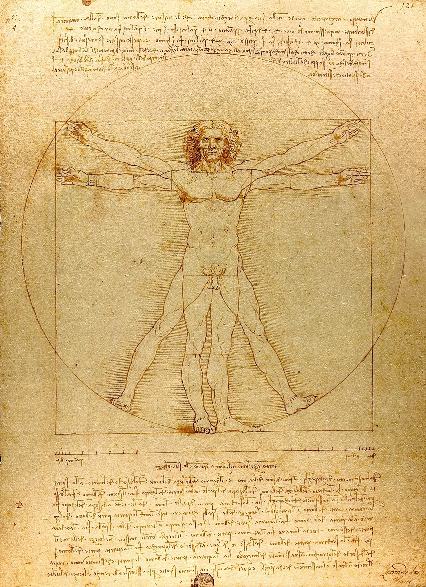

For a festive occasion, few treats can match the celebratory spirit of a classic birthday cake—and this easy-to-follow formula is the only one you’ll ever need. Our birthday cake recipe yields two dense layers of buttery, vanilla-forward white cake wrapped in classically rich buttercream frosting. For the signature, picture perfect birthday cake look, don’t forget to garnish your frosted cake with rainbow sprinkles. You can also stir a handful of colored sprinkles right into the cake batter to create a funfetti effect.
